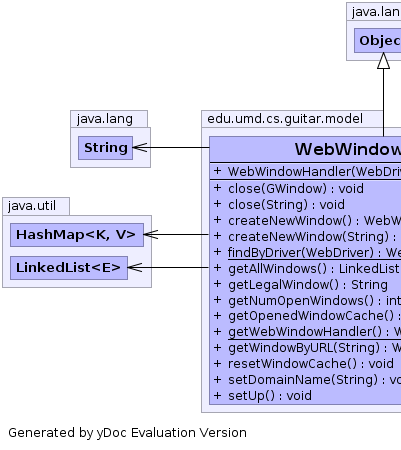
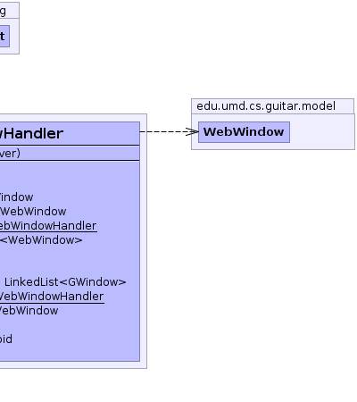

edu.umd.cs.guitar.model
Class WebWindowHandler
java.lang.Object
 edu.umd.cs.guitar.model.WebWindowHandler
edu.umd.cs.guitar.model.WebWindowHandler
public class WebWindowHandler
- extends java.lang.Object
Generated by yDoc Evaluation Version
-
-
 |
 |
| Methods inherited from class java.lang.Object |
clone, equals, finalize, getClass, hashCode, notify, notifyAll, toString, wait, wait, wait |
WebWindowHandler
public WebWindowHandler(org.openqa.selenium.WebDriver driver)
setDomainName
public void setDomainName(java.lang.String domainName)
setUp
public void setUp()
createNewWindow
public WebWindow createNewWindow()
createNewWindow
public WebWindow createNewWindow(java.lang.String URL)
findByDriver
public static WebWindowHandler findByDriver(org.openqa.selenium.WebDriver d)
getWebWindowHandler
public static WebWindowHandler getWebWindowHandler()
resetWindowCache
public void resetWindowCache()
getOpenedWindowCache
public java.util.LinkedList<edu.umd.cs.guitar.model.GWindow> getOpenedWindowCache()
getAllWindows
public java.util.LinkedList<WebWindow> getAllWindows()
getNumOpenWindows
public int getNumOpenWindows()
getLegalWindow
public java.lang.String getLegalWindow()
getWindowByURL
public WebWindow getWindowByURL(java.lang.String sWindowTitle)
close
public void close(java.lang.String handle)
close
public void close(edu.umd.cs.guitar.model.GWindow window)